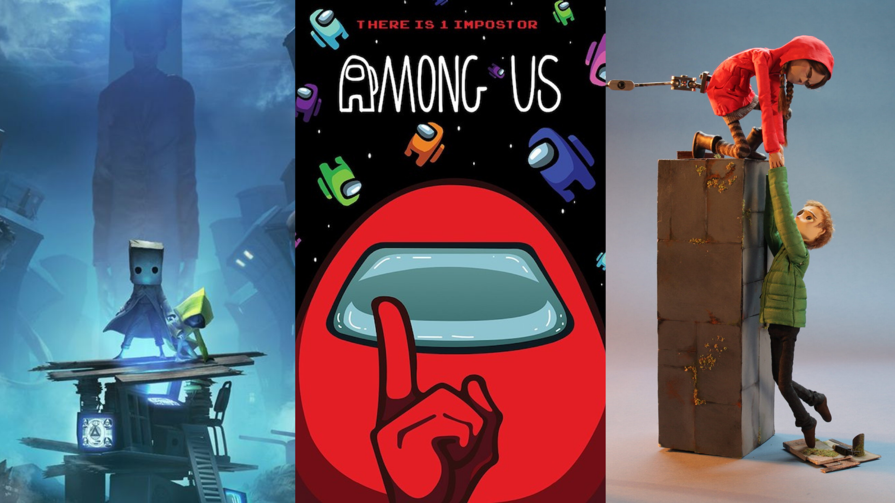

Indie game favourites: how they are leading the charge against Triple-A releases
Sept 9, 2021
Hello, fans and friends! It's a new week, and school has started back for many of us. If you're struggling to get back into the swing of things or are starting a new journey - you can do it! Be a little wild, make friends, and remember to wear your mask.
This week we've gotten a question from Fan ASKer Olivia, who said:
"This summer, there were a bunch of new independent creators at E3 with a lot of super interesting games. Did you watch E3 this year, and did any teased releases catch your eye? What are some of your fave indie games recently?"
Thanks for getting in touch, Olivia! I most definitely watched E3 this past summer - despite the 'totally-virtual show' technical difficulties, it was a wonderful weekend with a lot of exciting stuff showcased. And you're right that there was an abundance of new indie game developers and small studios. I have a list of games that caught my eye, as well as a few favourites from past years.

Before I get into those, I want to make something clear: I love indie games. If you're not in-the-know, an indie game is one developed by a small crew or an individual without the big budgets of the mega developers, like E3 and Sony and Nintendo. Those are typically the triple-A developers: the big guys with big funding, marketing and heaps of staff. But the amount of money pumped into a game doesn't necessarily make it great, and indie developers have been making that clear for years.
Some of the most popular games right now are made by smaller crews, and story-driven games in particular dominate the field. I can't wait to share some of my all-time favourites and anticipated new-releases with you.
Little Nightmares
Little Nightmares 2 was voted Playstation’s Best New Game upon release earlier this year, and it certainly deserved the title. The Little Nightmares series features haunting visuals in an eerie world with no words spoken and small, memorable characters, reminiscent of INSIDE. The story is yours to figure out - but don’t linger on the deeper meanings for too long, or else you might get caught by any number of villains out to get you!
It is a 3D platformer with a few clunky controls, but nothing that will severely impede your gaming experience. The first game took the gaming community by storm when it was released, and the small team at Tarsier Studios stepped up their game and created something even bolder for its sequel. Both are worth playing, for sure.

Vokabulantis
Vokabulantis is a self-proclaimed “stop motion and love-driven co-op platform adventure set in a broken world inspired by language”. It was a stand out at E3 because no one had ever seen anything quite like it. It has action, puzzles, and emotion - and has been funded by a Kickstarter with 89 thousand Euro to its name.
Every character movement is captured frame-by-frame with real-life 3D models and loaded into Unity. It has quirky mechanics and endearing story, and its gameplay demo had many reaching for a pen to jot down its admittedly odd name for future reference. Though in the early stages of development, it is worth keeping an eye on for the future, and hopefully it lives up to the hype!
Night in the Woods
A game that began as a Kickstarter by a two-person development crew became a beloved hallmark of story-driven independent gaming. The gorgeous art style will draw you in, but the story will be what sticks with you for a long time. You play as Mae, a college-dropout who has just moved back to their dingy hometown of Possum Springs. Mae is also, coincidentally, a cat.
There is so much life packed into this side scroller, and you can spend hours exploring Possum Springs to find all the little easter eggs. You climb telephone wires, break bottles with baseball bats, and jam on the bass guitar with Mae’s friends at band practice. Underneath it all is a Bildungsroman dealing with all the joys and pains of new adulthood, as well as a murder mystery which the band gets caught up in.
:format(webp):no_upscale()/cdn.vox-cdn.com/uploads/chorus_asset/file/8089787/ss_be58beee5186f4b06b828a90a126f47cca55ae0a.jpg)
Hitchhiker
Another game which emerged through E3, Hitchhiker is a point-and-click adventure with a wild narrative: attempt to hitchhike to your destination using any means supplied to you. It emulates the American road trip. Every character you meet and choice you make depends on you - so choose wisely!
The E3 trailer shows how easily things can go wrong. As you decide whose ride to take to get from A to B, you will meet unique personalities. But not everyone has good intentions, so keep your guard up!
It was a welcome surprise near the end of the conference and is definitely one to look out for.
Among Us
What can I say about Among Us? Just as Fall Guys took the world by storm, something even more intriguing arrived to take its place. It won the battle against Phasmophobia for the reigning indie game of 2020 due to its creative art style and spontaneity, while lacking the repetitiveness of Fall Guys.
Developers Innersloth have been updating the game since its surge in popularity, and even scrapped the idea for a second game when Among Us rose to fame. The abundance of memes, Youtube views and merchandise signal that this new-age Town of Salem is not going anywhere for a long time!
:format(webp)/cdn.vox-cdn.com/uploads/chorus_image/image/68697641/ss_a0f2416e11bf5b47788eaa3617e092b73962b145.0.jpg)
About Me

My name is Katie! I study English with Creative Writing at UCD. On ASK Passions I answer Fan ASKs all about music, video games, literature, and Formula 1. You can find me on LinkedIn.